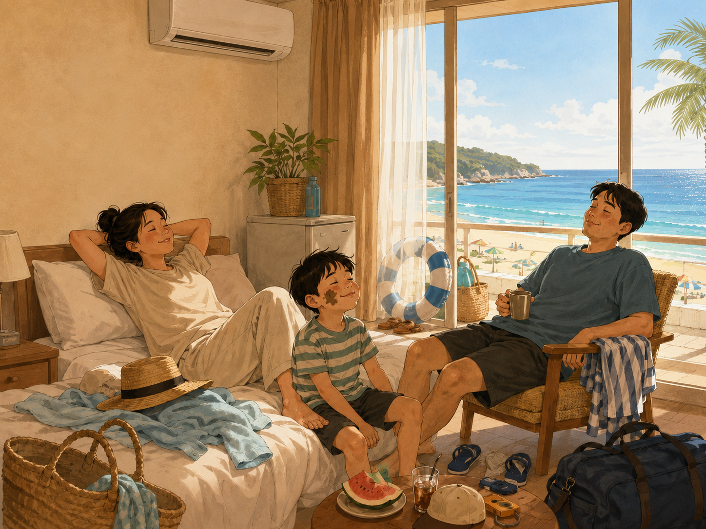

게으른 여행

목요일부터 일요일까지 가족 여행을 간다.
아이 방학에 맞춰 몇 주 전부터 준비한 여행이다. 숙소를 예약하고, 갈 곳도 찾아보고, 먹을 것도 생각해둔다. 준비만 보면 꽤 성실한 여행이다.
목요일, 눈을 뜨니 오전 11시쯤이다.
느지막이 일어나 한동안 뒹굴뒹굴한다. 지금 출발해야 하나 생각하다가 조금 더 뒹굴뒹굴하고, 이쯤 되니 그냥 가지 말까 싶다. 그러고도 다시 뒹굴뒹굴한다.
결국 집을 나서는 시간은 오후 4시다.
여행 첫날의 일정은 이동으로 거의 끝난다. 몇 주 동안 준비한 여행이지만, 출발은 동네 마트에 장 보러 가는 사람보다도 느긋하다.
금요일에도 우리는 숙소에서 뒹굴거린다.
에어컨 바람을 맞으며 “여기가 최고네” 하고 누워 있다. 바다를 보러 온 여행이지만, 가장 먼저 감탄하는 것은 숙소의 냉방 성능이다.
한참을 더 누워 있다가 오후 3시가 되어서야 밖으로 나온다.
바다에 들어가 해수욕을 하고, 머드를 한 줌 떠서 볼에 발라본다. 머드축제에 왔으니 최소한의 예의는 갖춘 셈이다. 얼굴 한쪽에 머드를 묻힌 채 다시 물에 들어가고, 숙소에 돌아와서는 기절하듯 잠든다.
토요일에는 조금 일찍 나가기로 한다.
어제처럼 늦게 움직이면 안 된다고 마음을 먹는다. 하지만 숙소를 나서는 시간은 오후 2시 30분이다.
“어제보다 30분 빨리 나왔네.”
우리 가족은 그것을 발전이라고 부르기로 한다.
해수욕을 하고 샤워를 한 뒤 힙합 축제를 보러 간다.
YDG, 엠씨 스나이퍼, 아웃사이더, 하하가 무대에 오르자 관객들은 노래를 따라 부르고 소리를 지른다. 오래된 힙합 팬들이 많이 모인 것 같다. 그런데 마지막 딘딘의 순서가 되자 사람들이 썰물처럼 빠져나가기 시작한다.
딘딘에게 특별한 잘못이 있는 것은 아닐 것이다.
아마 관객들의 체력과 귀가 시간이 먼저 공연을 끝내는 것에 가깝다. 우리 가족도 축제를 보고 돌아와 다시 깊이 잠든다.
일요일 아침에는 숙소 방송이 흘러나온다.
“체크아웃 시간은 오전 11시입니다.”
여행 내내 가장 부지런한 것은 체크아웃 안내 방송이다.
집으로 돌아가는 길에는 맛집에 들러 생면 파스타를 먹자고 한다. 여행의 마지막을 그럴듯하게 마무리할 계획이다.
하지만 우리는 그대로 집으로 돌아온다.
그리고 모두 기절한 듯 잠에 빠진다.
목요일부터 일요일까지 다녀오는 여행인데, 돌아보면 1박 2일 여행처럼 짧게 느껴진다. 출발은 늦고, 숙소에서는 오래 누워 있으며, 계획한 것 중 하지 못한 것도 많다.
그래도 재미있다.
많이 돌아다니지 않아도, 유명한 장소를 빠짐없이 보지 않아도, 가족끼리 같은 방에서 뒹굴거리고 바다에 들어갔다가 함께 지쳐 잠드는 것만으로 여행이 된다.
어쩌면 우리 가족에게 필요한 것은 빽빽한 일정이 아니라, 아무도 서두르지 않아도 되는 며칠인지도 모른다.
여행이 너무 짧다고 생각하지만, 우리가 실제로 여행하는 시간은 출발한 목요일 오후부터가 아닐 것이다.
몇 주 전부터 아이의 방학을 기다리고, 어디로 갈지 이야기하고, 늦잠을 자도 괜찮다고 생각하는 순간부터 이미 시작되고 있는지도 모른다.
아주 게으르고, 그래서 우리 가족다운 여행이다.